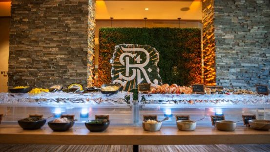
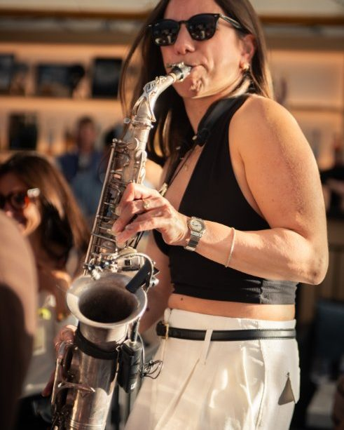
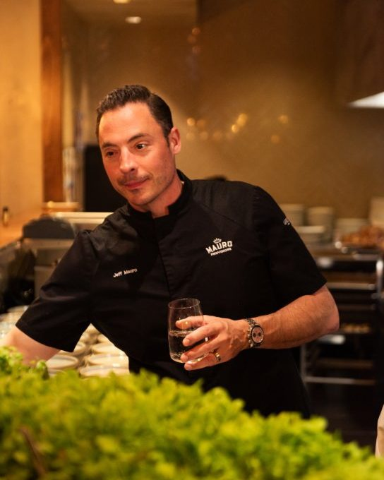
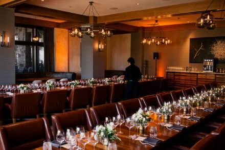
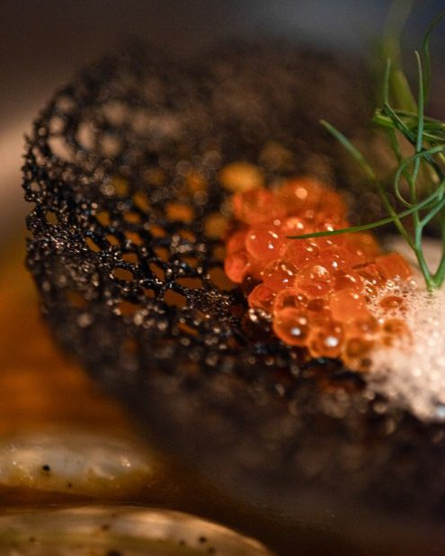

Utah corporate & event photography
Corporate & Events
Event coverage and professional portraits for teams and organizations — clean, natural photos that work as hard as your event does.

The coverage style
Present, not in the way.
Good event photography documents the event without interrupting it: speakers, attendees, details, and team portraits, photographed cleanly and naturally. The photos should be ready to use — on your website, in a recap, or in the next invitation.
Coverage is planned around your schedule, so the important moments are covered and the rest of the event runs untouched.
What to expect
From first message to finished photos.
- Plan togetherShare the date, venue, schedule, and what the photos are for, plus any must-have shots or people.
- The event itselfCoverage follows your schedule — unobtrusive for events, guided for team portraits.
- Your finished photosYour edited photos are delivered as an online gallery. Delivery and usage details are confirmed when you book.
Planning details
Good to know before you book.
- Event types: corporate events, team gatherings, and professional portraits for teams and organizations.
- Locations: throughout Utah, based in Provo, with travel as far as Farmington for photo work.
- What to share: event date, venue, schedule, and what the photos are for — plus any must-have shots.
- Team portraits: individual and group portraits can be scheduled around the event itself.
Gallery
Events around Utah



Investment
Corporate & event packages
Event coverage is quote-based. Headshot sessions $180–$280.
Questions
Corporate & Event FAQ
What kinds of corporate events do you photograph?
Corporate events, team gatherings, and professional portraits for teams and organizations — from small team sessions to larger event coverage.
Where in Utah do you photograph corporate events?
Corporate and event photography is available throughout Utah. Trevor Adair Photography is based in Provo and travels as far as Farmington for photo work.
What do you need from us to plan event coverage?
The event date, venue, schedule, and what the photos are for — plus any must-have shots or people. Share those in your inquiry and the plan follows from there.
How are event photos delivered, and how can we use them?
Event photos are delivered as an online gallery. Delivery and usage details are confirmed when you book.
How much does corporate or event photography cost?
Event coverage is quote-based, and headshot sessions are $180–$280. Contact Trevor Adair Photography for a quote.
Your event
Let's discuss your event.
Share your event date, venue, and schedule — we'll take it from there.